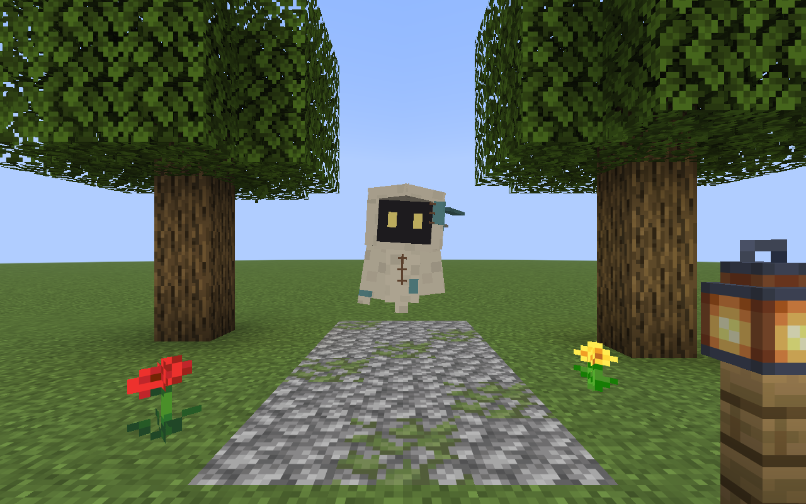

Wicklen:
Chronicles
Спутник для ваших открытий.
Дух путешествует рядом, а полевой дневник хранит находки. Наблюдайте существ через подзорную трубу, давайте открытиям свои имена, заполняйте карту и пройдите короткую экспедицию «Первый огонь».
Путеводитель и все скриншоты ↗
Скачать мод
Minecraft 26.3 · Fabric · Java 25
Chronicles 0.4.3 · JAR ↓0,83 МБ · для клиента и сервера · лицензия MIT
Что новогоИсходникиСообщить об ошибке
Контрольная сумма SHA-256
bae7899020c43fb0b7b05b2221fbb58174a69b475eac5da8bb79452ce1c95b6eУстановка
- Установите Fabric Loader 0.20.1 или новее для Minecraft 26.3 и Fabric API. Проверенная версия API — 0.165.0+26.3.
- Закройте игру и положите JAR в папку
mods. Удалите старые копии Chronicles, включая SNAPSHOT. - В одиночной игре мод нужен только в клиенте. В мультиплеере поставьте одну и ту же версию на сервер и всем игрокам. Откройте дневник клавишей G; команда
/spirit summonвызовет духа.
Совместимость
Сборка Wicklen не обязательна. Мод можно добавить в свой набор на Fabric для Minecraft 26.3.
| Мод или платформа | Что нужно знать |
|---|---|
| Fabric API | Обязательно Нужен на клиенте и сервере. |
| Gateway of Doom | Необязательная интеграция для боёв во дворах. Проверена версия 2.3.6 для Fabric 26.3. Без неё остаются исследования, дневник и мирные задания. |
| Field Guide | Необязательная интеграция с API версии 1.23: совместимые наблюдения животных засчитываются в Chronicles. Собственная подзорная труба работает и без Field Guide. |
| Моды на мир и существ | Можно наблюдать существ и зарегистрированные структуры других модов. Произвольная постройка не становится достопримечательностью автоматически; боевые дворы привязаны к станциям Wicklen. |
| Forge / NeoForge | Отдельной версии нет. Этот JAR рассчитан на Fabric; работа через сторонние слои совместимости не проверена. |
Проверенный состав сервера — в каталоге модов Wicklen. Совместимость с произвольной сборкой не гарантируется.
Нужен ли AI для игры?
Дневник, карта, наблюдения, задания и награды работают без AI. Для свободных разговоров с духом и справки по игре нужен отдельно настроенный провайдер: DeepSeek, OpenAI, Ollama или совместимый API. В сетевой игре его настраивает владелец сервера; игрокам ключ не нужен.
Данные, настройка и разработка
При разговорах провайдер получает игровое имя, сообщение, недавний диалог и игровой контекст, включая подходящие личные заметки. Облачный API может быть платным; Ollama можно запустить локально. Настройка и ограничения ↗
Основную реализацию написал ИИ по заданиям автора. ИИ также использовался для документации, переводов и концептов духа. Скриншоты сняты в игре.